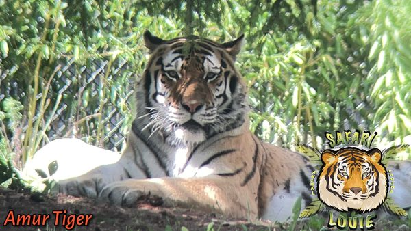

Detroit Zoo
Detroit Zoo, Detroit, Michigan

Me & My Folks had a Wonderful Time at the Detroit Zoo, The Detroit Zoo opened on August 1st 1928 and in this 125 Acre Zoo, it is home to over 2,000 animals representing 200 Species.
In this Beautiful Park it is home to the world’s largest & best Penguin Exhibit seeing them in 2 sides and seeing them underwater,
In the year 2000 Detroit Zoo was the very first place ever to make a build just dedicated to amphibians and is home to interesting and rare species like the Kihansi Spray Toad & Japanese Giant Salamander, They Also had a decent Reptile Building and Good habitats for them,
The Asian Grasslands & Forest which is home for Vultures, Camels, Red Pandas & on our visit we got to see Nikolai their Male Amur Tiger that was born at Columbus Zoo in 2017 which was a wonderful sight to see, The African Forests & Grasslands is home to the real Detroit Lions, Giraffes, Eland,
Zebras & More and then finally the American Grasslands & Arctic Ring of Life the domain for Wolves, Bison, Grizzly Bears along with Polar Bears & Sea Otters, This Zoo was Beautiful and if you ever plan to make a visit to Detroit, You will need to add the Detroit Zoo to your list, Big Time!!
Louie posted this on Facebook — open the original post →